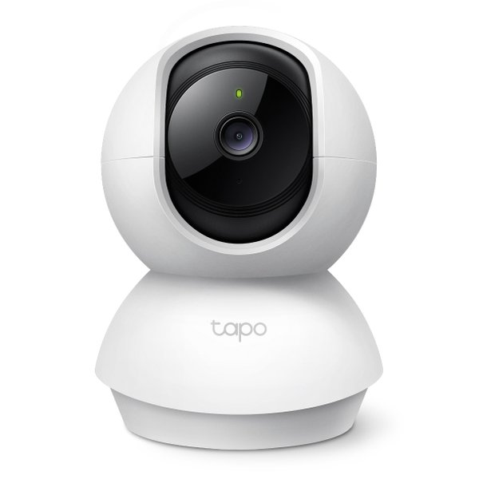
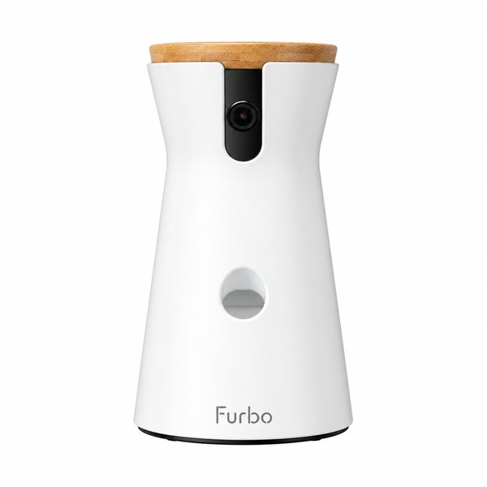

Las mejores cámaras para vigilar a tu mascota cuando no estás en casa
Comparamos cámaras específicas para mascotas y cámaras WiFi genéricas con detección de animales, para que sepas exactamente cuál se ajusta a tu presupuesto y a tu perro o gato.
¿Con prisa? La TP-Link Tapo C220 es la que recomendamos a la mayoría
Detecta a tu mascota por IA (no solo "movimiento"), graba en microSD sin necesidad de suscripción y cuesta menos de la mitad que una cámara específica para mascotas.
Comparativa rápida
| Modelo | Ideal para | Detección de mascota | Dispensador de premios | Precio aprox. |
|---|---|---|---|---|
| TP-Link Tapo C21A | Empezar con presupuesto ajustado | Movimiento general (no específica de mascotas) | No | ~24 € |
| TP-Link Tapo C220 Mejor relación calidad-precio |
La mayoría de hogares con perro o gato | Sí, detección específica de mascotas por IA | No | ~45 € |
| Furbo (cámara para perros) | Quien quiere la experiencia completa | Sí, con alertas de ladridos | Sí (según modelo, algunas funciones requieren suscripción) | desde ~100 € |
Precios orientativos verificados en Amazon.es en la fecha de actualización de esta página; pueden variar. Haz clic en cada producto para ver el precio y la disponibilidad actual.
Análisis de cada cámara
TP-Link Tapo C21A

Cámara WiFi interior genérica con giro de 360°, resolución 2K y visión nocturna. No detecta mascotas de forma específica (solo movimiento general), pero es una entrada muy barata si solo quieres poder mirar el salón desde el móvil y comprobar que tu mascota está bien.
A favor
- Precio muy bajo para empezar
- Visión 360° e imagen nocturna
- App gratuita sin coste añadido
En contra
- No distingue mascotas de personas u objetos
- Sin dispensador de premios ni juego
TP-Link Tapo C220

La damos como la opción que recomendamos a la mayoría de personas que buscan vigilar a su perro o gato en casa. Resolución 2K QHD, detección por IA que identifica específicamente mascotas (no solo "movimiento"), y compatibilidad con tarjeta microSD para grabar sin depender de una suscripción en la nube.
A favor
- Detección de mascotas por IA (menos falsas alarmas)
- Grabación local en microSD sin suscripción obligatoria
- Buena relación precio/prestaciones
En contra
- Sin dispensador de premios
- El audio bidireccional es más básico que en modelos premium
Furbo (cámara específica para perros)

Furbo es una marca pensada exclusivamente para vigilar y entretener a tu perro: incluye lanzador de premios (en los modelos que lo llevan), detección de ladridos con notificación al móvil y, en algunas versiones, funciones adicionales mediante suscripción. Es la opción de quien quiere algo más que "ver" a su mascota y busca poder interactuar con ella.
A favor
- Pensada específicamente para perros, no una cámara genérica adaptada
- Alertas de ladrido y, según modelo, lanzador de premios
- Marca reconocida en el nicho, buen historial de reseñas
En contra
- Precio bastante más alto que las opciones genéricas
- Algunas funciones avanzadas requieren suscripción mensual
Guía de compra: qué mirar antes de elegir
- Detección específica de mascotas: las cámaras genéricas más baratas solo detectan "movimiento", lo que genera muchas notificaciones falsas (una cortina moviéndose, un cambio de luz). Los modelos con IA de detección de mascotas avisan solo cuando de verdad es tu animal.
- Audio bidireccional: poder hablarle a tu mascota a distancia puede ayudar a algunos perros que lo pasan mal cuando se quedan solos (aquí explicamos cómo saber si tu perro tiene ansiedad por separación). Casi todas las cámaras de esta comparativa lo incluyen, pero la calidad del altavoz varía.
- Grabación local vs. en la nube: una tarjeta microSD te permite grabar sin pagar suscripción; el almacenamiento en la nube suele tener un coste mensual a partir de cierto tiempo de grabación.
- Dispensador de premios: es la función estrella de las cámaras específicas para mascotas tipo Furbo, pero también la que más encarece el producto. Solo la necesitas si quieres "premiar" a tu mascota a distancia, no solo vigilarla. Te lo explicamos en ¿merece la pena una cámara con dispensador de premios?
- Visión nocturna: importante si tu mascota se queda sola también de noche o en habitaciones con poca luz.
Cómo hemos hecho esta comparativa
Esta comparativa se basa en las fichas técnicas oficiales de cada fabricante, el histórico de precios y las valoraciones reales de compradores verificados en Amazon.es en el momento de la actualización indicada arriba. No recibimos unidades gratuitas de los fabricantes ni cobramos a las marcas por aparecer en esta lista: el orden y las recomendaciones son independientes de cualquier acuerdo comercial con ellas.
Preguntas frecuentes
¿Necesito una cámara específica de mascotas o me vale una cámara de vigilancia normal?
Depende de lo que busques. Si solo quieres poder mirar el salón desde el móvil, una cámara genérica como la Tapo C21A es suficiente. Si quieres menos notificaciones falsas y que identifique realmente a tu mascota, merece la pena pagar algo más por un modelo con detección de mascotas por IA como la Tapo C220. Si tienes gato, lee también qué tener en cuenta en una cámara para gatos.
¿Estas cámaras funcionan sin internet?
No: todas estas cámaras necesitan conexión WiFi para enviarte notificaciones y para que puedas verlas en directo desde la app del móvil.
¿Hace falta pagar una suscripción?
No siempre. Los modelos Tapo permiten grabar en una tarjeta microSD sin coste adicional. Algunas funciones avanzadas de Furbo (como ciertos análisis de comportamiento) sí requieren suscripción mensual; lo indicamos en cada ficha.